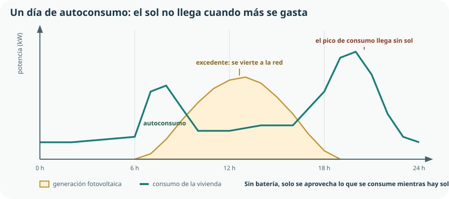

Último tema del curso, y el que reúne todo lo demás. La domótica es el Bloque F aplicado a una vivienda; el autoconsumo fotovoltaico es el Bloque D con una fuente propia; y el análisis de sostenibilidad es el criterio informado que la competencia 6 pide desde el principio. Al terminar deberías poder entrar en una casa, mirar cuatro cosas y decir con números qué convendría hacer primero.
- explicar qué es la domótica y en qué se diferencia de una instalación convencional;
- describir los elementos de una instalación domótica y sus arquitecturas;
- diseñar escenas y automatismos que produzcan ahorro medible;
- comparar las renovables aplicables a una vivienda y decir para qué sirve cada una;
- dimensionar de forma elemental una instalación fotovoltaica de autoconsumo;
- distinguir autoconsumo de excedente y explicar la compensación;
- calcular el periodo de retorno de una inversión energética y ponerlo en contexto;
- interpretar el certificado energético de un edificio y la etiqueta de un aparato;
- analizar la sostenibilidad de una vivienda y proponer mejoras ordenadas y justificadas.
1. Qué es la domótica, y qué no es
La domótica es el conjunto de sistemas que automatizan y controlan las instalaciones de una vivienda: iluminación, climatización, persianas, riego, seguridad y consumo. El currículo la sitúa junto a las «instalaciones de comunicación», y las dos van juntas porque una necesita de la otra.
Instalación convencional
Cada elemento se manda desde su propio interruptor, cableado directamente a él. Simple, robusta y rígida: cambiar el funcionamiento exige cambiar cables.
Instalación domótica
Los mandos y los elementos están separados: el interruptor envía una orden y un controlador decide qué hacer. Cambiar el comportamiento es reconfigurar, no recablear.
2. La instalación domótica
| Elemento | Función | Ejemplos |
|---|---|---|
| Sensores | Miden o detectan. | Temperatura, presencia, luminosidad, apertura de ventana, humo, fuga de agua, consumo eléctrico. |
| Actuadores | Ejecutan. | Relés de luz, reguladores, motores de persiana, electroválvulas, termostatos de zona. |
| Controlador | Decide según su programa. | Central domótica, o una placa como la del KR-1. |
| Interfaces de usuario | Permiten mandar y consultar. | Pulsadores, pantalla, aplicación móvil, voz. |
| Red de comunicación | Une todo lo anterior. | Cable dedicado, Wi-Fi, Zigbee o Bluetooth, del Tema 16. |
Tres arquitecturas, y la elección importa
Centralizada
Un controlador único al que llega todo. Fácil de programar y con un punto único de fallo: si cae, cae la casa.
Distribuida
Cada dispositivo tiene inteligencia propia y se comunica con los demás. Más robusta y más difícil de configurar. Es la arquitectura de los sistemas por cable profesionales.
En la nube
La lógica reside en un servidor de internet. Instalación trivial y dos problemas graves: no funciona sin red y depende de que una empresa mantenga el servicio.
3. Escenas y ahorro medible
Una escena es un conjunto de acciones que se ejecutan juntas ante una condición. Es la forma habitual de configurar la domótica, y es la máquina de estados del Tema 18 escrita en lenguaje de usuario.
| Escena | Condición | Acciones | Ahorro estimado |
|---|---|---|---|
| Salida de casa | Nadie detectado durante 30 min y puerta cerrada. | Apagar luces, bajar consigna de calefacción 3 °C, cortar enchufes no esenciales. | 10–15 % de la climatización |
| Protección solar | Luminosidad alta y temperatura exterior mayor de 28 °C. | Bajar persianas de la fachada al sol. | Hasta 30 % de la refrigeración |
| Ventana abierta | Contacto de ventana abierto. | Apagar el radiador de esa habitación. | 5–10 % de la calefacción |
| Aprovechar el excedente solar | Generación mayor que consumo durante 10 min. | Arrancar lavadora, lavavajillas o termo. | Sube el autoconsumo del 30 al 60 % |
| Ventilación nocturna de verano | Temperatura exterior menor que la interior, de noche. | Abrir ventanas motorizadas o activar extracción. | Reduce horas de refrigeración |
| Aviso de fuga | Sensor de agua mojado. | Cerrar la electroválvula general y avisar. | No ahorra energía: evita un desastre |
4. Energías renovables en la vivienda
| Tecnología | Qué produce | Rendimiento | Cuándo conviene |
|---|---|---|---|
| Solar fotovoltaica | Electricidad. | 18–23 % | Casi siempre: tejado disponible y consumo diurno. Es la opción por defecto. |
| Solar térmica | Agua caliente. | 50–70 % | Cuando el consumo de agua caliente es alto y constante. |
| Biomasa | Calor. | 85–92 % | Zonas frías con acceso a pélets y espacio de almacenamiento. |
| Geotérmica | Calor y frío, con bomba de calor. | SCOP 4–5,5 | Obra nueva con terreno; inversión alta y muy buen rendimiento. |
5. Dimensionar una instalación fotovoltaica
El dimensionado elemental de una instalación de autoconsumo tiene cinco pasos, y se puede hacer con los datos de una factura y una tabla pública de radiación.
De las facturas o de la curva horaria del contador del Tema 21. No el consumo anual solo: también cuándo se consume.
Las horas solares pico equivalentes de la localidad, dato público. En Madrid, del orden de 1 650 kWh por kWp al año.
No se dimensiona para cubrir el consumo anual, sino para aprovechar lo que se pueda consumir de día.
Un panel de unos 450 W ocupa alrededor de 2 m². La superficie de tejado bien orientada suele ser el límite real.
Y solo entonces decidir. Sin este paso no hay proyecto, hay una intención.
Eanual = Pinstalada · HSPanuales · PR P en kWp, HSP horas solares pico, PR rendimiento global ≈ 0,80
| Paso | Cálculo | Resultado |
|---|---|---|
| Potencia instalada | 6 paneles de 450 W | 2,7 kWp |
| Superficie necesaria | 6 × 2 m² | 12 m² de tejado |
| Producción anual | 2,7 × 1 650 × 0,80 | 3 564 kWh |
| Autoconsumo directo | 35 % de la producción, sin domótica | 1 247 kWh |
| Excedente vertido | 3 564 − 1 247 | 2 317 kWh |
| Ahorro por autoconsumo | 1 247 × 0,18 €/kWh | 224 €/año |
| Compensación del excedente | 2 317 × 0,06 €/kWh | 139 €/año |
| Ahorro total | — | 363 €/año |
6. Autoconsumo y excedentes

| Modalidad | Qué hace con el excedente | Observaciones |
|---|---|---|
| Sin excedentes | Un dispositivo impide verter a la red. | Trámite muy simple; se desperdicia el excedente. |
| Con excedentes y compensación | Se vierte y se descuenta en la factura a un precio menor. | Es la modalidad habitual en vivienda. La compensación no puede superar el importe de la energía consumida. |
| Con excedentes y venta | Se vende la energía en el mercado. | Obligaciones fiscales y administrativas; para instalaciones grandes. |
| Con batería | Se almacena para consumirlo después. | Sube el autoconsumo al 70–80 % y encarece mucho la instalación. |
| Autoconsumo colectivo | Varios vecinos comparten una instalación. | Permite aprovechar una cubierta común y reparte la inversión. |
7. El periodo de retorno, y sus límites
periodo de retorno = inversión / ahorro anual
| Medida | Inversión | Ahorro anual | Retorno | Vida útil |
|---|---|---|---|---|
| Sellado e insuflado de aislamiento en cámara | 2 500 € | 380 € | 6,6 años | 40 años |
| Fotovoltaica de 2,7 kWp | 3 000 € | 363 € | 8,3 años | 25 años |
| Fotovoltaica + escena de excedentes | 3 200 € | 470 € | 6,8 años | 25 años |
| Sistema domótico completo | 3 000 € | 180 € | 16,7 años | 12 años |
| Cambiar ventanas de una fachada | 3 000 € | 210 € | 14,3 años | 30 años |
8. Certificación energética
El certificado de eficiencia energética es obligatorio para vender o alquilar una vivienda en España. Asigna una letra de la A a la G según el consumo de energía primaria y las emisiones de CO₂ del edificio.
| Certificado de un edificio | Etiqueta de un electrodoméstico | |
|---|---|---|
| Qué califica | El edificio: envolvente, instalaciones y renovables. | El aparato. |
| Escala | A a G, relativa a la zona climática y al uso. | A a G, revisada en 2021 para que la A vuelva a ser exigente. |
| Quién lo emite | Un técnico competente, y se registra en la comunidad autónoma. | El fabricante, bajo su responsabilidad. |
| Obligatorio | Para vender o alquilar. | Para comercializar el aparato. |
| Lo más útil que contiene | El informe de mejoras con su ahorro y su coste. | El consumo anual en kWh, que permite calcular. |
9. Analizar la sostenibilidad de una vivienda
El cierre del curso: reunir todo lo anterior en un análisis que termine en una propuesta razonada. Es el ejercicio que el criterio 6.2 pide, y el procedimiento es este.
Facturas de un año, curva horaria del contador, certificado energético, superficie y orientación, inventario de aparatos con su consumo de etiqueta.
Temperaturas interiores, temperaturas de superficie con termómetro de infrarrojos, consumo de aparatos con un medidor de enchufe. Del Tema 2: sin medir, solo hay opiniones.
Cuánto va a climatización, agua caliente, cocina, iluminación y aparatos. Es lo que permite atacar lo que pesa.
Pérdidas y demanda, con el método del Tema 22. Localizar los puntos débiles.
Con la escalera del Tema 20, cada una con su inversión, su ahorro, su retorno y su vida útil.
Energía ahorrada, dinero ahorrado y CO₂ evitado. Con esos tres números el informe es defendible.
Informe y presentación, con el rigor del Tema 4. Un análisis que nadie entiende no cambia nada.
| Uso | % del consumo | Dónde se ataca |
|---|---|---|
| Calefacción | ≈ 40 % | Aislamiento y equipo. Temas 22 y 23. |
| Agua caliente sanitaria | ≈ 20 % | Solar térmica o bomba de calor; excedente fotovoltaico. |
| Electrodomésticos | ≈ 18 % | Etiqueta energética y desplazamiento horario. |
| Cocina | ≈ 8 % | Inducción frente a otras tecnologías. |
| Iluminación | ≈ 5 % | LED y control por presencia. |
| Refrigeración | ≈ 1 % | Protección solar pasiva; creciente cada año. |
| Aparatos en espera | ≈ 8 % | Regletas y escenas de salida. |
Comprueba lo que has aprendido
Este tema —y el curso— se demuestran con un análisis de una vivienda real que termine en una propuesta ordenada y cuantificada.
| Aspecto | Qué debes demostrar | Evidencias posibles |
|---|---|---|
| Domótica | Que diseñas automatismos que ahorran, no mandos a distancia. | Tres escenas con su condición, sus acciones, su enclavamiento y su ahorro estimado. |
| Arquitectura del sistema | Que eliges entre centralizada, distribuida o en la nube con criterios. | Elección justificada y comprobación de que el sistema funciona sin internet. |
| Renovables | Que comparas tecnologías por lo que producen y no solo por su rendimiento. | Comparación de fotovoltaica y solar térmica para un caso concreto, con su conclusión. |
| Dimensionado | Que dimensionas una instalación fotovoltaica con los cinco pasos. | Cálculo completo con la radiación real de tu localidad, la superficie disponible y la producción anual. |
| Autoconsumo | Que distingues autoconsumo de excedente y explicas por qué no se sobredimensiona. | Gráfica de consumo y generación de un día y cálculo del ahorro con y sin escena de excedentes. |
| Certificación | Que interpretas un certificado y una etiqueta y usas sus números. | Certificado real leído, con su consumo por metro cuadrado convertido en coste anual. |
| Análisis completo | Que propones medidas ordenadas con inversión, retorno, vida útil y CO₂ evitado. | Informe con los siete pasos, el reparto del consumo y la propuesta priorizada y defendida. |
Cierre del curso: haz el análisis sobre el propio instituto. Tiene facturas, tiene superficie, tiene certificado y tiene un huerto con un sistema de riego que vosotros habéis construido y medido. Con eso se puede escribir un informe que el centro pueda usar de verdad, y ese es el mejor trabajo final que esta materia permite.
Glosario del tema
- Autoconsumo
- Parte de la energía generada que se consume en la propia instalación.
- Autoconsumo colectivo
- Instalación compartida por varios consumidores, habitualmente vecinos de un mismo edificio.
- Certificado de eficiencia energética
- Documento que califica un edificio de la A a la G según su consumo de energía primaria y sus emisiones.
- Compensación de excedentes
- Descuento en la factura por la energía vertida a la red, a un precio menor que el de compra.
- Domótica
- Conjunto de sistemas que automatizan y controlan las instalaciones de una vivienda.
- Escena
- Conjunto de acciones que se ejecutan juntas al cumplirse una condición.
- Etiqueta energética
- Calificación de un aparato, con su clase y su consumo anual; la escala se recalibró en 2021.
- Excedente
- Energía generada que no se consume en el momento y se vierte a la red o se almacena.
- Gestión de la demanda
- Desplazamiento del consumo a las horas en que la energía es más barata o más limpia.
- Horas solares pico
- Horas equivalentes de radiación de mil vatios por metro cuadrado; permiten estimar la producción anual.
- kWp
- Kilovatio pico: potencia nominal de una instalación fotovoltaica en condiciones normalizadas.
- Periodo de retorno
- Años que tarda una inversión en pagarse con el ahorro que genera.
- Rendimiento global (PR)
- Factor que recoge las pérdidas de una instalación fotovoltaica: inversor, cableado, temperatura y suciedad.
Resumen esencial
- La domótica separa el mando del elemento: cambiar el comportamiento es reconfigurar, no recablear.
- El ahorro no viene del control remoto, viene de la automatización: encender la luz desde el móvil no ahorra nada.
- Un sistema domótico es el SCADA del Tema 18 en una vivienda, y sus enclavamientos se aplican igual.
- La lógica esencial vive en casa: un sistema que no puede encender una luz sin internet está mal diseñado.
- La escena que más rinde es la que arranca los electrodomésticos con el excedente solar: sube el autoconsumo del 30 al 60 %.
- Toda escena necesita excepciones, y la persona debe poder imponerse siempre; si no, el sistema acaba desactivado.
- La solar térmica rinde tres veces más que la fotovoltaica y se instala menos, porque la electricidad sirve para todo y el agua caliente solo para una cosa.
- Una instalación fotovoltaica se dimensiona para el consumo diurno, no para el anual: el kilovatio hora vertido vale la tercera parte.
- Orientar al sudoeste produce menos y puede autoconsumirse más: la magnitud que se optimiza decide el diseño.
- La batería doméstica todavía no sale a cuenta con buena conexión a red, y la conclusión hay que rehacerla cada pocos años.
- La batería más barata de una vivienda es el termo de agua caliente, y se activa con una escena domótica.
- El periodo de retorno no basta: hay que ponerlo junto a la vida útil, a lo que aporta además del dinero, a la subida del precio de la energía y a las subvenciones.
- Doscientos euros de domótica bien elegida pueden mejorar el retorno más que tres mil de domótica completa.
- En una etiqueta o un certificado, la letra sirve para comparar y el número para calcular; y el informe de mejoras del certificado es una auditoría ya pagada.
- El 60 % del consumo de una vivienda es calor: una propuesta que empieza por las bombillas ataca el 5 %.
- El resultado de un proyecto de sostenibilidad no es una maqueta que funciona: es una afirmación sostenida por datos propios.
Fuentes y recursos fiables
- [1] IDAE. Guías de autoconsumo, calificación energética y consumos del sector residencial.
- [2] Código Técnico de la Edificación. Documento Básico de Ahorro de Energía: contribución renovable mínima y exigencias de la envolvente.
- [3] PVGIS — Comisión Europea (en español). Radiación solar y producción fotovoltaica estimada de cualquier localidad.
- [4] Comisión Nacional de los Mercados y la Competencia. Modalidades de autoconsumo y compensación de excedentes.
- [5] Comisión Europea — Etiqueta energética y diseño ecológico (en español). Escala recalibrada de electrodomésticos.
- [6] Ministerio para la Transición Ecológica y el Reto Demográfico. Factores de emisión y estrategia de rehabilitación.
- [7] Decreto 64/2022, de 20 de julio (BOCM). Currículo de Tecnología e Ingeniería I, bloque G: domótica, renovables, eficiencia y certificación energética.